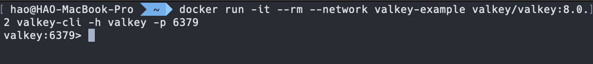
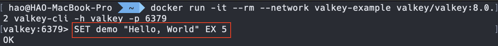
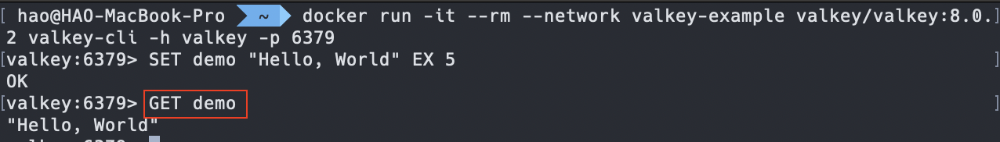
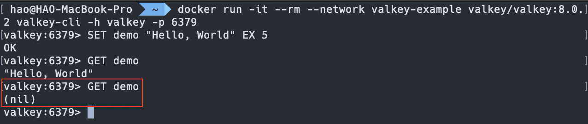

在 NestJS 使用 Valkey 實現 Cache
什麼是 Valkey？
在 2024 年時，Redis 官方宣佈要針對 License 進行異動，對於託管 Redis 的雲端服務供應商將不能免費使用 Redis，像是：AWS、Google Cloud Platform 等平台。因此，社群 fork 了 Redis 並建立開源的替代品 - Valkey。它是一個高效的鍵值儲存系統，可以用來實現 快取(Cache)、訊息佇列(Message Queue) 等功能，在運行方面，同樣也支援 獨立運作模式(Standalone) 與 叢集運作模式(Cluster) 。
補充：對於 Redis 異動的內容，可以參考 Will 保哥翻譯後的版本。
架設 Valkey
官方有提供 Binary 與 Docker 兩種方式，這裡我們使用 Docker 來進行架設。透過下方指令將 Valkey 的 Docker Image 從 DockerHub 下載下來：
1 | $ docker pull valkey/valkey:8.0.2 |
補充：這裡指定版本為
8.0.2，若有需要可以自行換成所需的版本號。
在啟動 Valkey 之前，需要先準備可以操作 Valkey 的環境，所以這裡先建立一個 Valkey 使用的 Docker Network：
1 | $ docker network create valkey-example |
建立完畢後，透過下方指令進行架設：
1 | $ docker run --name valkey -p 6379:6379 --network valkey-example -d valkey/valkey:8.0.2 |
操作 Valkey
Valkey 提供的 Docker Image 本身帶有 Valkey CLI 的功能，透過下方指令即可快速啟動 CLI：
1 | $ docker run -it --rm --network valkey-example valkey/valkey:8.0.2 valkey-cli -h valkey -p 6379 |
補充：指令中的
--network要跟 Valkey 架設時使用的 Docker Network 相同，以範例來說，就是先前建立的valkey-example，而指令中使用的-h是 Valkey CLI 指定連線的 Hostname，以範例來說，我們架設的 Valkey Hostname 為valkey，而-p代表的是 Valkey 架設時使用的 Port，以範例來說就是6379。
啟動成功會看到下方畫面：

來試試 Valkey 的 SET，與 Redis 的 SET 相同，會以 字串(String) 的形式進行保存。透過下方指令建立 Key 為 demo、Value 為 Hello, World 的資料，並設定 過期時間(Expire time) 為 5 秒：
1 | $ SET demo "Hello, World" EX 5 |

執行完畢後，在 5 秒內透過 GET 指令取出 Key 為 demo 的值，會得到 Hello, World。下方為相關指令：
1 | $ GET demo |

過了 5 秒再次執行 GET 指令，會得到 (nil)：

整合 NestJS Cache
NestJS 針對 Cache 機制實作了 CacheModule，該 Module 封裝了 cache-manager，目的是要讓發者可以輕易地實現 Cache 機制，甚至可以用 相同介面操作不同 Cache 媒介 ，如：In-memory 的 Cache、Redis、Valkey 等。
NestJS 11 版之後，告別第 5 版的 cache-manager，轉為使用第 6 版的 cache-manager，從這版開始底層使用了 Keyv 這個套件，來強化 相同介面操作不同 Cache 媒介 的特性，也因此從 NestJS 11 開始，可以運用 Keyv 提供的套件來快速轉換 Cache 媒介，十分強大！
前置作業
要使用 CacheModule 需要安裝下列依賴套件：
1 | $ npm install @nestjs/cache-manager cache-manager |
如前面所述，我們可以運用 Keyv 提供的套件來快速轉換 Cache 媒介，以我們現在的情境來說，可以安裝 Keyv 提供的 @keyv/valkey：
1 | $ npm install @keyv/valkey |
用 CacheModule 操作 Valkey
在 NestJS 專案中，於 AppModule 匯入 CacheModule，並使用 register 方法來註冊，這裡指定 stores 為 ValkeyKeyv 的實例：
1 | import { Module } from '@nestjs/common'; |
接著，調整 AppController 的內容，注入 Cache 並調整 getHello 方法，透過 Cache 的 get 方法取得 Key 為 random 的值，如果存在就回傳；反之，產生一組隨機字串，並透過 Cache 的 set 方法執行 Valkey 的 SET，Key 為 random、Value 為產生的隨機字串，同時設定 TTL 為 10 秒，最後再將結果回傳：
1 | import { Controller, Get } from '@nestjs/common'; |
補充：官方文件注入
Cache的方式是透過@Inject裝飾器注入 Token 為CACHE_MANAGER的 Provider，該 Provider 的型別為cache-manager提供的Cache類，但其實 NestJS 在@nestjs/cache-manager有實現Cache類，該類的介面與cache-manager的Cache相同，用來當作上述 Provider 的 Alias Provider。上方範例使用的是 Alias Provider，可以簡化注入的程式碼。
啟動 NestJS 專案後，透過 [GET] 方法存取 http://localhost:3000 即可嘗試看看在 NestJS 使用 Valkey 當 Cache 的效果哦！
體驗轉換 Cache 媒介
假如現在有一個 NestJS 的專案要從 Redis 轉成 Valkey，理論上只需要將 CacheModule 的 stores 進行替換即可。這邊來實際模擬一下，首先，撰寫下方 docker-compose.yml 來快速啟動 Redis 與 Valkey：
1 | version: '3.7' |
透過下方指令將上述服務啟動：
1 | $ docker compose -p nestjs-valkey-example -f docker-compose.yml up -d |
啟動後來調整一下 NestJS 專案，現在要將 Cache 媒介轉換成 Redis，這裡可以安裝 @keyv/redis 來達到此效果：
1 | $ npm install @keyv/redis |
安裝完畢後，調整 AppModule 的內容，將 stores 內的 ValkeyKeyv 註解掉，換成 RedisKeyv：
1 | import { Module } from '@nestjs/common'; |
這樣就完成轉換了，可以透過 [GET] 方法存取 http://localhost:3000 來試試看效果。如果要切換回 Valkey 就將 stores 改成使用 ValkeyKeyv 即可：
1 | import { Module } from '@nestjs/common'; |
結論
我們可以看到 Valkey 作為 Redis 的開源替代方案，目前在使用體驗上與 Redis 十分相似甚至有相同之處，讓開發者可以大幅降低轉換成本。另外，由於 NestJS 內建的 CacheModule 採用了 Keyv 作為底層實作，使我們能夠透過簡單的設定，快速在不同的 Cache 媒介之間切換，提升開發的靈活性。